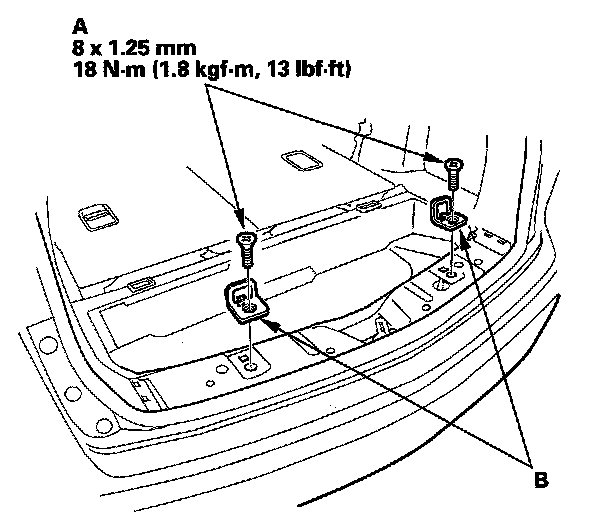

Child Seat Tether Attachment: Service and Repair
Third Row Child Seat Tether Anchor Replacement1. Remove the rear trim panel.

2. Remove the screws (A), and remove the third row child seat tether anchors (B).
3. Install the anchor in the reverse order of removal, and apply medium strength type liquid thread lock to the threads of the child seat tether anchor screws.